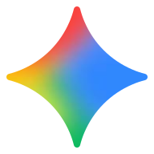

01Потребность
ЦельПонять проблему
Вопрос«Нужно ли?»
БарьерСрочность
Роль AIДиагностирует
СигналКатегория / бренд
Система компонентов для исследований, аналитических отчётов и продуктовых экранов. Базовый режим — светлый editorial/data; тёмный брендовый режим используется как акцент для обложек и крупных секций.
Минимум декоративного шума, высокая читаемость цифр и узнаваемый синий акцент.
Brand palette
Typography
Лид на 1–3 строки объясняет, что пользователь увидит дальше.
Основной текст используется для пояснений, методологии и интерпретации данных.
Мелкий текст — подписи, легенды, вспомогательные метрики.
CAPTION / 12 PX / MEDIUM
Минимум 12 px для любого видимого текста, включая SVG. Основной текст — 16 px, пояснения — 14 px; на телефоне не уменьшать body и поля ввода ниже 16 px. Длинные подписи переносить, не обрезать.
Radii & surfaces
Buttons & tags
.btn · .tag · semantic states
Segmented / chips
Search + filters
Это не структура исследования, а набор готовых визуальных элементов, которые можно комбинировать в любом порядке.
Крупный editorial hero: короткий тезис, дата, CTA и визуальный акцент. Для конкретного исследования справа заменяется на предметный арт или data-art.
KPI cards
CJM-first methodology · Research engine
Исследование начинается с пути принятия решения. По каждому этапу фиксируем задачу пользователя и вопросы, затем одинаково проверяем их во всех AI-каналах и читаем результат по этапам CJM.

Gemini GigaChat Perplexity
Алиса AI
Google AI Overview
Alice AI на поиске
Perplexity
Алиса AI
Google AI Overview
Alice AI на поиске
Не фиксируем одну универсальную воронку. Сохраняем единый визуальный каркас, а этапы, цели и вопросы адаптируем под рынок: телеком, недвижимость, e-commerce, финансы, медицина и т.д.
Для каждого этапа CJM связываем пользовательскую задачу с реальными вопросами, ролью AI и наблюдаемыми сигналами бренда. Так исследование объясняет где именно AI влияет на выбор, а не только считает общую видимость.
CJM overview · 3–7 этапов
Шесть колонок — пример. Компонент должен растягиваться под реальную длину пути, а не заставлять исследование укладываться в один шаблон.
Понять, есть ли проблема и нужно ли действовать.
Определить требования и подходящие варианты.
Определиться с типом продукта или способом действия.
Сопоставить бренды по критериям выбора.
Найти способ купить, подключить или оформить.
Разобраться с использованием, возвратом или повтором.
CJM layers · подробная карта
Вместо плотной таблицы — карточки этапов с одинаковой внутренней логикой. Такой формат легче читать в исследовании и проще адаптировать под 3–7 этапов.
CJM performance funnel · референс МегаФона
Фокус-бренд сравнивается с лидером каждого этапа. Справа сразу показано, кто лидер, его значение и разрыв — так график отвечает на три вопроса: где мы сильны, кому уступаем и насколько.
| Этап CJM | ChatGPT | Gemini | DeepSeek | Alice AI | Perplexity |
|---|---|---|---|---|---|
| Потребность | 31% | 48% | 67% | 52% | 29% |
| Решение | 58% | 81% | 86% | 63% | 55% |
| Сравнение | 78% | 62% | 83% | 59% | 72% |
Фирменный синий всегда закреплён за фокус-брендом или ключевой серией. Остальные цвета — только для сравнения.
Leaderboard table
| Бренд / сайт | Видимость ? | SOV ? | AISOV ? | Позиция ? | Тональность | Цитирование |
|---|---|---|---|---|---|---|
| 1Bosch бренд | 13,3% | 7,6% | 1,04% | 3,0 | +73,6 п.п. | 0,0% |
| 2TRW бренд | 12,3% | 7,0% | 1,31% | 2,2 | +68,2 п.п. | 0,0% |
| 3Brembo бренд | 6,8% | 3,9% | 0,65% | 2,6 | +73,3 п.п. | 0,1% |
| drive2.ru сайт | — | — | — | — | — | 9,5% |
Heatmap / platform × brand
| Бренд | ChatGPT | Gemini | DeepSeek | GigaChat | Alice AI | Perplexity |
|---|---|---|---|---|---|---|
| Фокус-бренд | 12,6% | 9,8% | 16,1% | 7,2% | 10,1% | 5,4% |
| Конкурент A | 6,8% | 12,9% | 9,2% | 4,8% | 5,1% | 7,4% |
| Конкурент B | 2,9% | 7,1% | 5,0% | 10,2% | 8,6% | 2,2% |
Data states
Фокус-бренд виден чаще медианы рынка, но уступает в прямых рекомендациях. Вывод отделён от графика и читается как самостоятельный тезис.
Срез по отдельному региону индикативный из-за малого числа формулировок. Использовать как направление проверки, а не как рейтинг.
Компактная нумерация разделов и длинная горизонтальная линия помогают ориентироваться в лонгриде, не превращая страницу в презентацию.
Recommendation / backlog cards
Карточка переводит наблюдение из данных в конкретное действие.
Показывайте домен, объём цитирований и краткую причину приоритета.
Подходит для рисков, возможностей и точек роста.
Элементы, которых может не быть в текущем исследовании, но они полезны для будущих data-story.
AI answer accordion
Source share list
Before / after or two-signal comparison
Бренд часто попадает в ответы, но редко становится финальным советом.
Полезно для сравнения двух независимых метрик без попытки свести их в один балл.
Обложка, разделитель главы, keynote-цифра, цитата или CTA. Для длинных таблиц и большинства аналитики сохраняйте светлый фон.
Один HTML-документ должен оставаться полноценным и на десктопе, и на смартфоне. На мобильном меняется компоновка и приоритет контента, но не набор данных и не смысл исследования.
Плашка не блокирует страницу и занимает около 140–160 px по высоте вместо половины экрана.
Эти правила относятся к каждой публичной странице исследования.
Как в UI-kit impulse.guru: generic-иконки работают через CSS mask-image и наследуют currentColor. Логотипы AI-моделей лежат отдельными SVG, чтобы сохранять фирменный вид платформ.
Использование
Размеры: sm 16 · md 24 · lg 32 · xl 48. Цвет меняется через currentColor или модификатор.
Рекомендованные группы
Для этапов CJM лучше использовать один outline-стиль, а не смешивать эмодзи, залитые pictograms и логотипы AI.
Generic icons · клик копирует HTML
AI platform icons · клик копирует путь